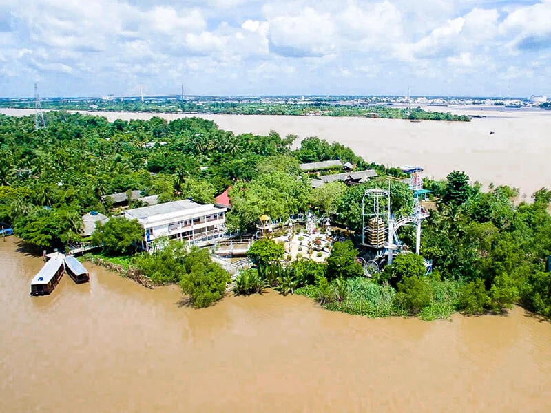
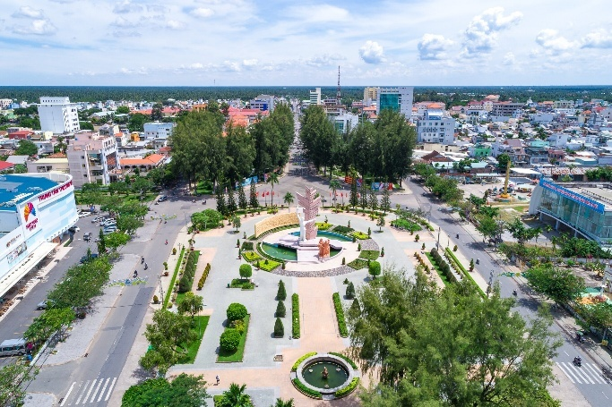
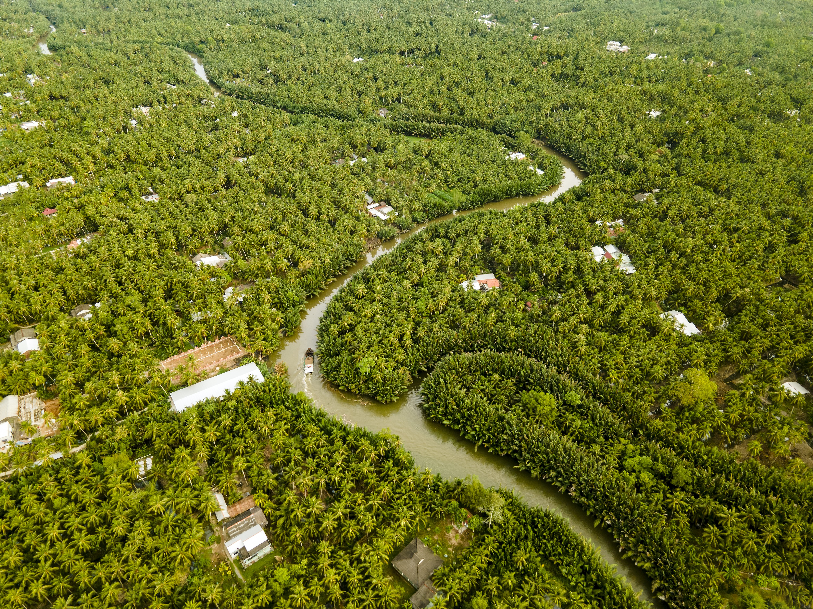

Những Địa Điểm Du Lịch Nổi Tiếng
Từ những cù lao rợp bóng dừa xanh mát, vườn trái cây sum suê trĩu quả đến các di tích lịch sử vang dội - Bến Tre luôn chào đón bạn với lòng hiếu khách chân thành.
Từ những cù lao rợp bóng dừa xanh mát, vườn trái cây sum suê trĩu quả đến các di tích lịch sử vang dội - Bến Tre luôn chào đón bạn với lòng hiếu khách chân thành.

Sinh TháiXã Tân Thạch, Huyện Châu Thành, Bến Tre
Nổi tiếng với di tích Đạo Dừa độc đáo, trải nghiệm ngồi xuồng ba lá luồn lách qua các con rạch dừa nước rợp bóng mát, tham quan trang trại nuôi ong lấy mật và lò kẹo dừa truyền thống.
 Dân Gian
Dân Gian
Ấp 2, Xã Phú Nhuận, TP. Bến Tre
Địa điểm vui chơi dã ngoại cực hot! Du khách được mặc áo bà ba truyền thống, hòa mình vào không gian sông nước với các trò chơi tát mương bắt cá, đạp xe qua cầu khỉ, đu dây qua sông và chèo xuồng kayak.
 Làng Nghề
Làng Nghề
Huyện Chợ Lách, Tỉnh Bến Tre
Được mệnh danh là "vương quốc hoa kiểng và cây giống" lớn nhất miền Tây Nam Bộ. Nơi đây quy tụ hàng triệu chậu mai vàng, cúc mâm xôi, cây cảnh bonsai uốn tỉa nghệ thuật và vườn sầu riêng bạt ngàn.

Sinh TháiXã Tân Thạch & Quới Sơn, Huyện Châu Thành
Cồn Quy vẫn giữ được nét đẹp hoang sơ, mộc mạc nhất trong tứ linh cồn. Du khách sẽ được thưởng thức trái cây chín mọng hái tận cành và thả hồn theo những giai điệu Đờn Ca Tài Tử mộc mạc.

Hoang DãXã Mỹ Hòa & Tân Xuân, Huyện Ba Tri
Khu sinh thái rừng ngập mặn trù phú ven sông Ba Lai, là ngôi nhà trú ngụ của hơn 84 loài chim hoang dã. Cảnh tượng hàng vạn cánh cò trắng bay về tổ trong ánh hoàng hôn đỏ rực là khoảnh khắc kỳ thú không thể nào quên.
Lịch Sử
Xã Định Thủy, Huyện Mỏ Cày Nam, Bến Tre
Nơi nổ ra ngọn lửa Đồng Khởi huyền thoại năm 1960 của "Đội quân tóc dài" xứ Dừa anh dũng. Khu di tích lưu giữ hàng trăm hiện vật, vũ khí tự tạo và câu chuyện hào hùng của Nữ tướng Nguyễn Thị Định.
 Tâm Linh
Tâm Linh
Thị trấn Ba Tri - Bình Đại, Tỉnh Bến Tre
Một trong những ngôi chùa lớn và lộng lẫy nhất miền Tây với sắc vàng rực rỡ uy nghiêm. Chùa có khuôn viên rộng hơn 8ha với tượng Phật Di Lặc dát vàng khổng lồ và cảnh quan thanh tịnh.
Nằm giữa sông Hàm Luông và Cổ Chiên
Cù lao lớn nhất Bến Tre, nổi tiếng với những rặng dừa thẳng tắp bạt ngàn, làng nghề dệt chiếu cói Cà Mơn và các lò chế biến than dừa, thảm xơ dừa xuất khẩu đi khắp thế giới.
Những lưu ý hữu ích để chuyến đi của bạn trọn vẹn và nhiều niềm vui nhất
Bến Tre có khí hậu ôn hòa quanh năm. Tuy nhiên đẹp nhất là mùa hè (tháng 5 - 8) để thưởng thức trái cây chín, hoặc dịp giáp Tết để ngắm làng hoa Cái Mơn rực rỡ.
Chỉ cách Sài Gòn khoảng 85km (2 tiếng đi xe khách hoặc xe máy). Khi đến nơi, bạn có thể thuê xe máy chạy đường làng hoặc thuê xuồng ghe đi tour sông nước.
Nên chuẩn bị quần áo thoải mái, dép sandal hoặc giày mềm dễ đi lại. Đừng quên mang thêm một bộ quần áo dự phòng khi tham gia các trò chơi tát mương bắt cá.